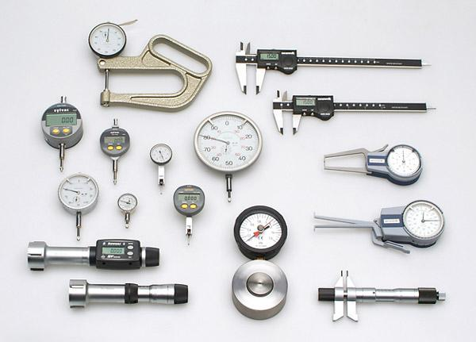

Ручной измерительный инструмент
Ручной измерительный инструмент
Базовый и точный контроль на участке, в ОТК и при входном контроле деталей.
ШтангенциркулиМикрометрыНутромерыИндикаторыГлубиномерыВысотомерыТолщиномерыКалибры